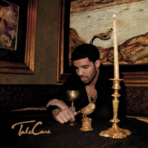

Take Care
October 1, 2020 by Anjinari

Take Care is the second studio album by Canadian rapper Drake.
It was released on November 15, 2011 by Young Money Entertainment, Cash Money Records and Republic Records.
The album features guest appearances from The Weeknd, Rihanna, Kendrick Lamar, Birdman, Nicki Minaj, Rick Ross, Lil Wayne, and André 3000.
Alongside prominent production from the album's executive producers Drake and 40, further contributors include T-Minus, Chantal Kreviazuk, Boi-1da, Illangelo, Jamie xx, Supa Dups, Just Blaze, Chase N. Cashe, and Doc McKinney.
Nothing Was The Same
October 1, 2020 by Anjinari
 Nothing Was the Same is the third studio album by Canadian rapper Drake.
It was released on September 24, 2013, through OVO Sound, Republic Records, and Young Money Entertainment, and distributed by Cash Money Records.
Work on the record began in 2012 and continued through 2013.
As an executive producer, Drake enlisted collaborators such as 2 Chainz, Big Sean, Majid Jordan, Jay-Z, Jhené Aiko and Sampha for guest appearances on the album.
The album's production was primarily handled by 40 and other OVO Sound producers; including Boi-1da, Mike Zombie, Nineteen85 and Detail.
Nothing Was the Same is the third studio album by Canadian rapper Drake.
It was released on September 24, 2013, through OVO Sound, Republic Records, and Young Money Entertainment, and distributed by Cash Money Records.
Work on the record began in 2012 and continued through 2013.
As an executive producer, Drake enlisted collaborators such as 2 Chainz, Big Sean, Majid Jordan, Jay-Z, Jhené Aiko and Sampha for guest appearances on the album.
The album's production was primarily handled by 40 and other OVO Sound producers; including Boi-1da, Mike Zombie, Nineteen85 and Detail.